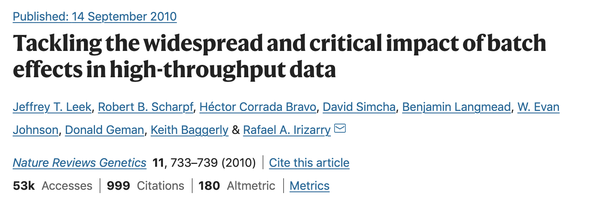

 —
TODO after finishing lab on dimensionality reduction and using corresponding object.
We will discuss two approaches to handle known batch effects.
A natural approach in dealing with batch effects is to incorporate them as covariates in our statistical model. In practice, this may happen in multiple ways. We provide a few examples:
zinbwave or scVI, one can incorporate covariates and effectively calculate reduced dimensions conditional on the batch effect.It is crucial, however, that the batch variable(s) is (are) not confounded with the biological variable(s) of interest. If these variables are correlated, accounting for the batch effect will also remove biological signal. In such scenarios, it is very hard, if not impossible, to separate biological from technical variation.
Sometimes it is not straight forward to simply incorporate a covariate in the analysis framework, e.g., when performing PCA dimensionality reduction. In these cases, it can be useful to estimate batch-corrected counts. Depending on the statistical model, this may be implemented differently, but the idea is always similar: we estimate the batch effect using a regression model, and substract it from our observed data.
For example, say we are working with a (Poisson or negative binomial) count GLM. Let \(Y_{gi}\) denote a measure of the gene expression from gene \(g\) in cell \(i\). Let \(\mathbf{B}\) denote a \(n \times 2\) matrix denoting the batch effect we want to correct for. Since \(\mathbf{B}\) has only two columns, there is only a single batch effect (i.e., there are two batches in total). Let \(\mathbf{X}\) denote the \(n \times p\) design matrix containing the covariates of interest (cell type, treatment condition, etc.). Finally, let \(O_i\) correspond to known cell-specific offsets.
The mean model would correspond to
\[ \log E(Y_{gi} | B_i, X_i, O_i) = \mathbf{X}_i\beta_g + \mathbf{B}_i \gamma_g + O_i. \]
with \(\beta_g\) a \(\p \times 1\) vector of parameters of interest, and \(\gamma_g\) a \(2 \times 1\) vector of parameters modeling the effect of batch on average gene expression. We can then obtain batch- and offset-corrected counts via
\[ \log(\tilde{Y}_{gi}) = \log E(Y_{gi}) - \mathbf{B}_i \gamma_g - O_i, \]
i.e., these are obtained as residuals of the GLM, correcting for technical variation, but keeping biological variation (i.e., we do not substract the \(\mathbf{X}_i\beta_g\) effects).
In RUVSeq, developed by Risso et al. (2014), for example, the authors approximate this by regressing \(Z_{gi} = \log (Y_{gi}) - O_i\) onto \(\mathbf{B}\), and calculating the residuals from this linear model, i.e., \(\log(\tilde{Y}_{gi}) = \log (Y_{gi}) - O_i - \mathbf{B}_i \gamma_g\).
Similarly, we may calculate Pearson residuals as batch-corrected counts
\[ R_{gi} = \frac{Y_{gi} - \mu_{gi}}{\sqrt{\mu_{gi} + \phi_g \mu_{gi}^2}} ,\]
assuming a negative binomial model, where
\[ \log E(Y_{gi} | B_i, X_i, O_i) = \log( \mu_{gi} | B_i, X_i, O_i) = \mathbf{X}_i\beta_g + \mathbf{B}_i \gamma_g + O_i. \]
This approach is adopted in the recent RUV-III-NB paper by Salim et al. (2021).
In all of the above, we have assumed we know the major sources of technical variation, and that are able to represent these using the batch effects encoded in \(\mathbf{B}\) and offsets \(\mathbf{O}\). In some cases, we may want to account for unknown (latent) unwanted variation. These may consist of complex technical effects that typical normalization procedures do not account for, or batch effects for which we do not observe the batch variable, e.g., using public data when we do not have access to the full metadata. In such a setting, we typically try to summarize these complex effects by assuming that the unknown unwanted variation (UUV) is of low-rank, e.g., of rank \(K \le 10\), and we attempt to estimate this low-rank matrix, using approaches such as factor analysis or principal component analysis.
Individuals can also be considered batch effects if doing dimensitonality reduction.